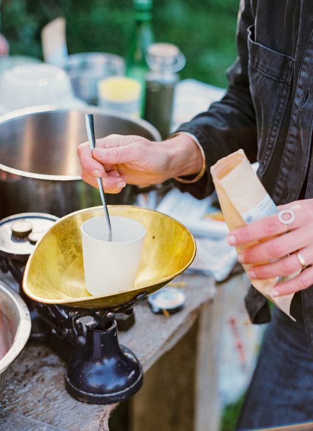
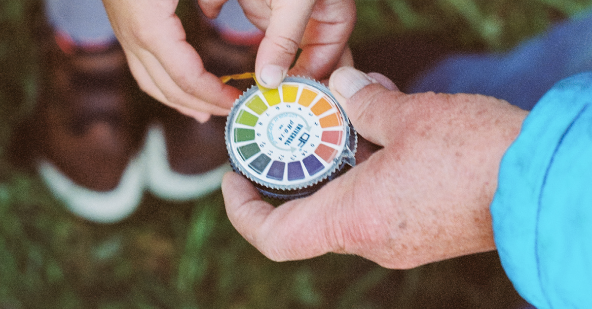
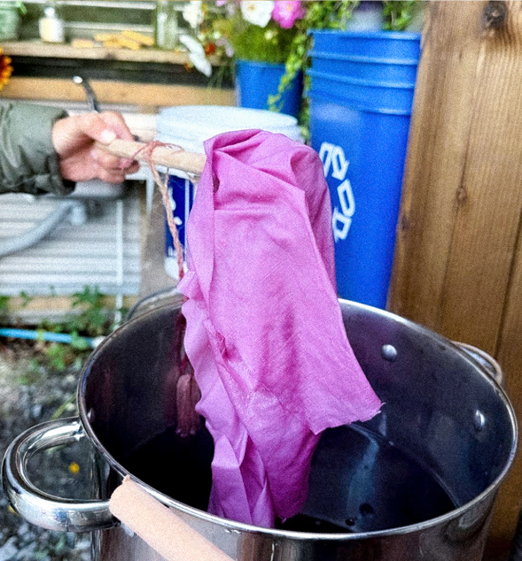
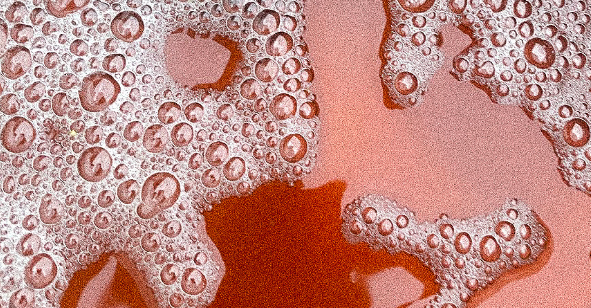
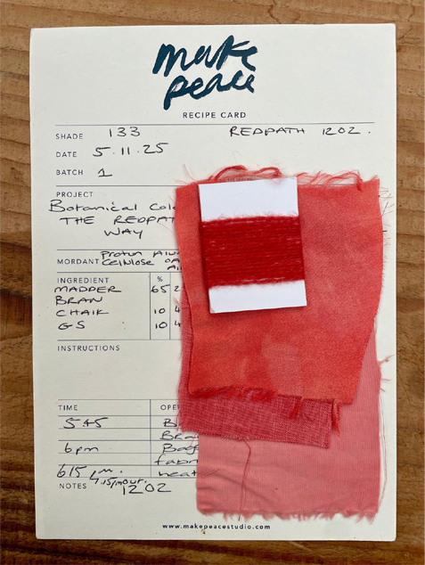
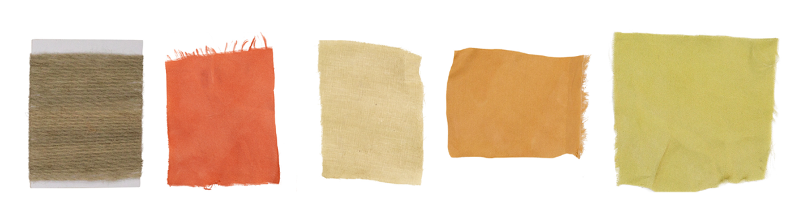

How to Dye

The recipes included here were created by volunteers during the project Botanical Colour: The Redpath Way, using locally sourced and foraged plants.
We have selected six recipes that we feel are particularly suitable for children aged 8 and over. They use plant materials that are generally easy to source and abundant.
You can follow the recipes exactly, or use them as a starting point. Try plants growing in your own landscape, adapt to the season and see what colours you can discover.
Natural dyeing is a wonderful activity for the classroom because it brings together science, maths, literacy, art and place. Children can weigh materials, measure quantities, observe changes in colour and temperature, record their results and make predictions about what might happen next.
Where possible, forage for dye plants locally and encourage children to notice what is growing around them. This can help connect the activity to the landscape and the natural world.
Please read the Ethical and Safe Foraging Guide before collecting any plant material.
There are several stages to natural dyeing, so the process can easily be divided into separate classroom sessions.
Think of it a little like baking a cake: prepare your ingredients, follow the stages in order, and keep notes about what you have done.
You can download the Foraging Card and Recipe Card to record where your plants were sourced and to create and record your own natural dye recipes.

Before You Begin
Natural dyeing involves plants, heat and small quantities of chemicals. Some plants are toxic, and some materials used in dyeing can irritate the skin or eyes. Always check plants for toxicity before using them.
Never use a plant for dyeing simply because it is edible.
Some plants that are safe to eat can be harmful when heated or used in larger quantities. For example, rhubarb leaves contain oxalic acid and should not be boiled for dyeing.
Safety
- An adult should supervise all dyeing activities involving heat or chemicals.
- Wear gloves when handling mordants, modifiers and dye baths.
- Work in a well-ventilated space. Outdoors are ideal.
- Never use kitchen equipment for dyeing. Keep pots, spoons, scales and other equipment for dye use only.
- Do not eat or drink in the dyeing area.
- Keep food, pets and animals away from the dyeing area.
- Do not inhale powders, steam or vapour.
- Take care around hot water and hot equipment.
- Label all dyeing equipment clearly so that it is not accidentally used for food preparation.
- Follow the manufacturer’s safety instructions for any purchased mordant or modifier.
All activities are undertaken at your own risk. Please ensure you research materials thoroughly and follow safe working practices at all times. The project accepts no responsibility for injury, loss or damage arising from the use of this information.
What You’ll Need
Basic equipment
- Stainless steel or enamel dye pot
- Long-handled spoon — dye use only
- Thermometer
- Heat source
- Rubber or nitrile gloves
- Large container or tub for soaking
- Measuring scales
- Measuring jug
- Glass jars or heat-resistant containers for dissolving mordants
- Tongs
- Labels and marker pen
- Notebook or dye record sheet
For experimenting with colour
- pH test strips — useful for exploring how acidic and alkaline solutions can affect colour.
- Small containers or jars — useful for testing different modifiers side by side.
- Teaspoons — for adding small amounts of modifier.
Aluminium and copper pots can also be used experimentally. Because different metals can affect natural dyes, they may produce different colours. For consistent results, however, we recommend using stainless steel or enamel.
Understanding WOF
You will see WOF throughout these recipes.
WOF means Weight of Fibre. It gives us a simple way of calculating how much plant material, mordant or other ingredients to use in relation to the amount of fibre being dyed. First, weigh your fibre when it is completely dry.
The calculation
For example
If your dry fibre weighs 100 g and the recipe calls for 10% WOF:
100 g × 10 ÷ 100 = 10 g
So you would use 10 g of the ingredient.
If your fibre weighs 250 g:
250 g × 10 ÷ 100 = 25 g
Your turn
| Dry Fibre | WOF | Amount needed |
|---|---|---|
| 50 g | 10% | 5 g |
| 100 g | 10% | 10 g |
| 250 g | 10% | 25 g |
Important: Always weigh fibre when it is dry. Wet fibre can hold a lot of water and will give you a much heavier — and therefore inaccurate — measurement.
The Four Stages of Natural Dyeing
Most of the recipes in this resource follow four basic stages:
Scouring
Washing the fibre
Mordanting
Preparing the fibre to accept the dye
Dyeing
Adding colour
Rinsing and drying
Washing and revealing the final colour
Between stages, keep the fibre wet whenever possible. If it has dried out, soak it in clean water for at least one hour before continuing. This allows the fibres to become fully wet and helps the next treatment reach them evenly.
1. Scouring: Preparing the Fibre
Before dyeing, fibres need to be thoroughly cleaned. Scouring removes oils, dirt, dust and finishes that may have been added during manufacturing. A clean fibre gives the dye a better chance of reaching the fibres evenly.
You will need
- Dry fibre
- Water
- Soda ash
- Dye pot
Method
- Weigh your dry fibre and record the weight.
- Place the fibre in a large container and cover it with water.
- Leave it to soak for at least 1 hour.
- Fill a dye pot with enough water for the fibre to move freely.
- Add approximately 1 teaspoon of soda ash per litre of water.
- Stir to dissolve.
- Add the wet fibre.
- Slowly heat the bath to approximately 85°C.
- Hold at this temperature for 1 hour.
- Gently move the fibre around regularly, teasing apart folds and bubbles.
- Turn off the heat and allow the fibre to cool.
- Rinse thoroughly in clean water.
- The fibre can now be dried or taken directly to the mordanting stage.
Mordanting
A mordant is a substance that helps natural dye compounds attach to fibres. It can also change the colour produced by a dye.
We use aluminium potassium sulphate (alum) as our main mordant, following Margaret Redpath’s reduced-impact approach of 10% WOF.
Protein fibres such as wool and silk can be mordanted directly with alum. Plant-based cellulose fibres such as cotton and linen need an additional tannin treatment before the alum bath.
What is a fibre?
 Cellulose fibre illustration
Cellulose fibre illustrationCellulose fibres
Cellulose fibres come from plants.
Examples include:
- Cotton
- Linen
- Hemp
- Flax
- Ramie
- Bamboo viscose and other regenerated cellulose fibres
Protein fibres
Protein fibres come from animals.
Examples include:
- Wool
- Silk
- Cashmere
- Alpaca
- Mohair
Why Do Cellulose Fibres Need Tannin?
Alum does not attach to cellulose fibres as effectively as it does to protein fibres. For cellulose fibres, we therefore use tannin first.
Tannin molecules attach to the cellulose fibre. The alum can then interact with the tannin, creating a surface that is much more receptive to many natural dyes.
Think of the tannin as helping to create a bridge between the plant fibre and the mordant.
For this resource we use oak gall tannin, where available from a responsible source.
 aria-label="Photograph illustrating cellulose fibre mordanting">Place the PDF’s tannin photograph here
aria-label="Photograph illustrating cellulose fibre mordanting">Place the PDF’s tannin photograph hereMordanting Cellulose Fibres
Stage 1: Tannin
You will need
- Scoured cotton or linen
- Oak gall tannin
- Water
- Dye pot
- Glass jar
- Scales
We use 7% WOF oak gall tannin.
Method
- Make sure your fibre has been thoroughly scoured. If it has dried, soak it in clean water for at least 1 hour.
- Weigh out 7% WOF oak gall tannin.
- Put the tannin into a glass jar.
- Add a little warm water and stir until it is well dispersed.
- Fill a dye pot with enough water for the fibre to move freely.
- Add the tannin mixture and stir.
- Add the wet fibre.
- Heat gently to approximately 85°C.
- Hold for approximately 90 minutes, moving the fibre regularly.
- Turn off the heat and allow the fibre to cool.
- Gently rinse the fibre once in clean water.
- Do not over-rinse at this stage. We want to keep the tannin attached to the fibre. The fibre can now be dried or moved directly to the alum bath.

Place the PDF’s alum illustration hereStage 2: Alum
We use 10% WOF aluminium potassium sulphate (alum), following Margaret Redpath’s reduced-impact method.
Method
- Weigh out 10% WOF alum.
- Fill a dye pot with enough water for the fibre to move freely.
- Put the alum into a glass jar.
- Add some hot water and stir to dissolve as much as possible.
- Add the mixture to the dye pot and stir.
- Add the wet fibre.
- Heat the bath to approximately 85°C.
- Turn off the heat.
- Cover the pot to help retain the heat.
- Leave the fibre in the bath for approximately 90 minutes, moving it gently from time to time.
- Remove the fibre and allow it to cool.
- Rinse gently in clean water.
- The fibre can now be dyed or hung up to dry.
Mordanting Wool and Silk
Wool and silk are protein fibres and can be mordanted directly with alum.
Method
- Scour the fibre.
- Allow it to cool.
- If the fibre has dried, soak it in clean water for at least 1 hour.
- Calculate 10% WOF alum.
- Dissolve the alum in a little hot water.
- Add the solution to a dye pot containing enough water for the fibre to move freely.
- Add the wet fibre.
- Heat to approximately 85°C.
- Turn off the heat.
- Leave for approximately 90 minutes, moving the fibre gently from time to time.
- Remove and rinse gently.
- The fibre is ready to dye.
Important: Wool can felt if it is subjected to sudden changes in temperature or rough handling. Move it gently and avoid rapid heating and cooling.
Dyeing
Now comes the exciting part: adding colour. There are several ways to extract colour from plants. The recipes in this resource use two simple approaches.
Method 1: Hot Dye Extraction
This is a straightforward method for many fresh or dried plant materials.
Method
- Weigh your dry fibre and record the weight.
- Prepare your plant material according to the individual recipe.
- Place the plant material in a dye pot.
- Add enough water for the fibre to move freely.
- Heat gently to approximately 80–90°C.
- Allow the plant material to release its colour for approximately 60–90 minutes.
- Strain out the plant material if required by the recipe.
- Add your wet, mordanted fibre.
- Keep the dye bath hot but avoid vigorous boiling.
- Move the fibre gently and regularly so that the colour is distributed evenly.
- Continue until the fibre reaches the colour you want.
- Remove the fibre and allow it to cool.
- Rinse gently in clean water.
- Hang to dry.

Method 2: Overdyeing and Colour Shifting
One of the most exciting things about natural dyes is that the colour can sometimes be changed after dyeing.
This is called modifying.
A modifier changes the chemical environment around the dye. Some natural dye compounds respond to changes in pH — the measure of how acidic or alkaline a solution is. Other modifiers, such as iron, react directly with the dye compounds. This means that the same plant can sometimes produce several different colours.
Think of it like this

Different dyes respond differently to this scale.
- Acidic modifiers lower the pH.
- Alkaline modifiers raise the pH.
- Iron modifiers interact with the dye and can make colours darker, duller or more muted.
There is no single colour change that happens with every plant. Some dyes barely change, while others can change dramatically.
Common Modifiers
Acidic: Citric Acid
An acidic modifier can brighten or shift some natural dyes, particularly dyes that are sensitive to pH. Citric acid is a powdered acid and should be handled carefully.
Important: The strength and timing will depend on the dye. Always start with a weak solution and a small test piece.
Method
- Make a weak solution of citric acid in warm water.
- Place your dyed and rinsed fibre into the solution.
- Leave for a few minutes.
- Watch carefully for colour changes.
- Remove when you reach the colour you want.
- Rinse thoroughly in clean water.
- Dry and record your result.
Alkaline: Soda Ash
Soda ash is an alkaline substance. Increasing the pH can change the colour of some natural dyes, sometimes making them appear deeper, duller, warmer or more yellow/green depending on the dye.
Because different dyes react differently, there is no universal colour result.
Method
- Dissolve a small amount of soda ash in warm water.
- Place your dyed and rinsed fibre into the solution.
- Leave for a few minutes.
- Watch the colour carefully.
- Remove when you reach the desired colour.
- Rinse thoroughly in clean water.
- Dry and record your result.
Iron: A Strong Colour Modifier
Iron is different from acid and alkaline modifiers. It can react with natural dye compounds and often darkens or “saddens” colours, producing deeper greens, greys, browns and charcoal tones. Iron also reacts strongly with tannins.
Because iron can be much stronger than other modifiers and can damage fibres when used excessively, it should be used in very dilute solutions and for short periods.

Place the PDF’s iron modifier photograph hereSafety
Iron sulphate is harmful if swallowed and can irritate the skin and eyes. For classroom activities, an adult should prepare the solution and supervise its use. Wear gloves and eye protection, avoid contact with skin and eyes, and keep the powder and solution away from children.
Never ingest iron dye materials or use dyeing equipment for food preparation.
Method
- Prepare a very dilute iron modifier according to the manufacturer’s instructions.
- Remove the dyed fibre from its dye bath.
- Place it in the iron bath.
- Watch the colour carefully — changes can happen quickly.
- Remove the fibre after a short period.
- Rinse thoroughly.
- Dry and record the result.
Important: Do not leave fibres in strong iron solutions for long periods. Iron can weaken fibres, particularly when used at high concentrations.
Record Your Results
Natural dyeing is an experiment.
Margaret and David Redpath meticulously recorded their discoveries, observations and recipes. This careful record-keeping enabled them to build their knowledge over time and understand how different plants, fibres and processes affected the colours they produced.
Try to record as much as you can as you work. Your notes will help you compare results, spot patterns and learn from your experiments.
For each dye bath, record:
- Plant used
- Where it came from
- Date collected
- Fresh or dried
- Amount of plant material
- Weight of fibre
- Type of fibre
- Mordant used
- Amount of mordant
- Temperature
- Length of dyeing time
- Modifier used
- Final colour
- Anything unexpected

Place the PDF’s record-keeping illustration hereYou can also attach your fibre sample to the recipe card and give your colour a name.
What did you discover?
Try asking:
- What changed?
- What stayed the same?
- What do you think caused the difference?
- What would you change next time?
This is where natural dyeing becomes more than simply making colour — it becomes a way of investigating the natural world.

Place the PDF’s colour illustration hereA Note About Colour
Natural dyeing rarely produces exactly the same colour twice.
The colour can be affected by:
- The species of plant
- Where the plant grew
- The soil and weather
- The time of year it was collected
- Whether it was fresh or dried
- How much plant material was used
- The type of fibre
- The mordant
- The temperature
- The length of time in the dye bath
- The water being used
- The pH of the dye bath
This variability is part of the process.
There is no “wrong” colour.
Instead, record what happened and ask why.
We have included six easy-to-replicate dye recipes using abundant and readily available plant materials. These include locally available UK plants as well as food-waste materials such as avocado skins and onion skins.
Some of the plants used for dyeing are not edible and may cause irritation or other adverse effects if handled incorrectly. Please read our Ethical and Safe Foraging Guide before collecting or handling any plant material, and follow the guidance on identification, responsible harvesting and safe handling.